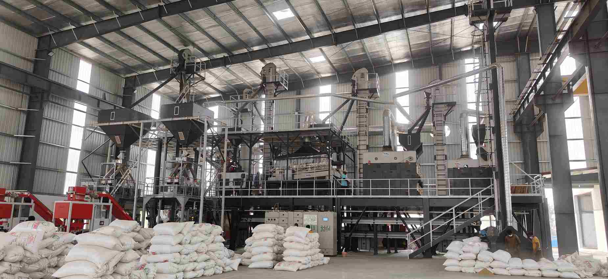
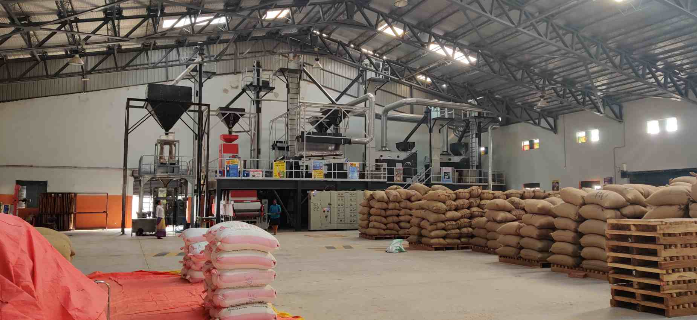
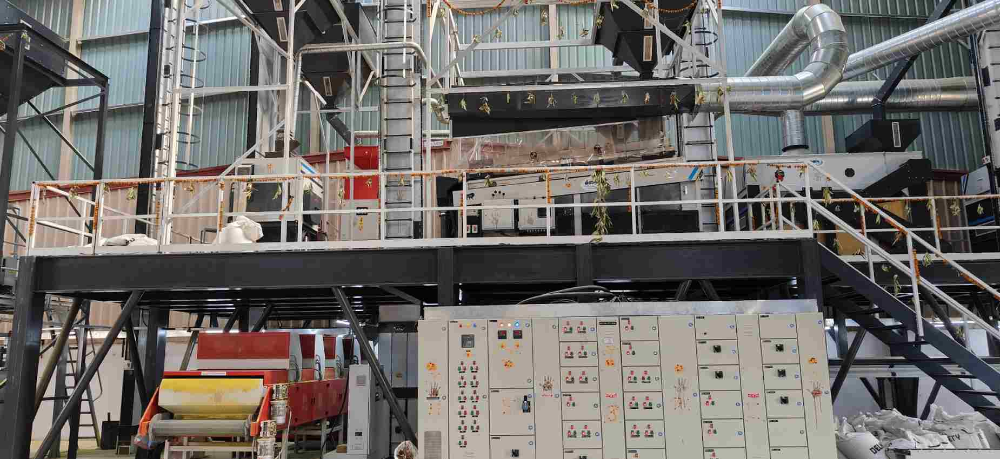
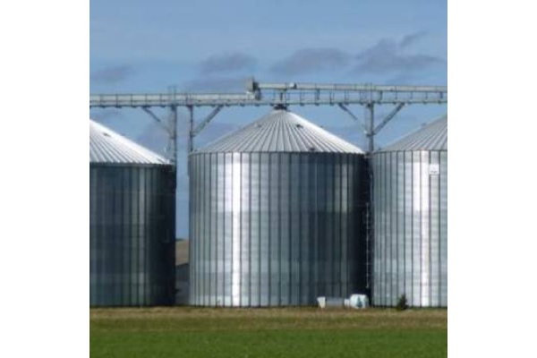

State-of-the-art Facility
dMaic Innovations has the state-of-the-art manufacturing facility to manufacture the products as per the quality standards to cater every individual requirement of the customers as per our drawings.



Post-Harvest Technology · Est. 2018 · Bengaluru
Pre Cleaners, Fine Cleaners, Gravity Separators, De-stoners and complete turnkey plants for seeds and free-flowing grains.
Year established by seasoned technocrats
Years of experience in post-harvest technology
Years of combined founder experience in turnkey projects
Machine product lines, from lab scale to full plant
01 — About Us
dMaic Innovations was established in the year 2018 by the technocrats with rich experience of more than two decades in the field of Post harvesting technology to provide total solutions to the industry by offering state-of-the-art solutions with latest and proven technology filled with innovations.
dMaic Innovations has carefully designed the products to operate them at odd conditions suitable for all free flowing seeds/grains and manufactures Post-Harvest Agricultural processing machinery like Pre Cleaners, Fine Cleaners, Gravity Separators, De-stoners and offers turnkey plants for processing hybrid seeds / grains like Rice, Wheat, Maize, nuts, spices, beans, coffee, tea and for most of the free flowing agricultural products.
dMaic Innovations has the state-of-the-art manufacturing facility to manufacture the products as per the quality standards to cater every individual requirement of the customers as per our drawings.
dMaic Innovations employs qualified and experienced manpower well-trained in the industry environment.
The Marketing & Engineering Office along with the Manufacturing facility is located at Sy.No. 23/1, Mahanteshwara Layout, Bylakonenahalli, Lakshmipura Post, Bengaluru - 562162.
02 — Infographic
How a typical dMaic processing line turns field-run grain into clean, graded seed. Scroll to run the line.
Field-run seed / grain enters with stones, straw, gunny threads & dust.
Input: raw lotVertical transport almost without mechanical damage.
Gentle liftRotary scalper removes straw & threads; aspiration lifts loose dust.
Out: oversize, straw, dustMore retention time on screens separates oversize from undersize.
Out: immature & undersizePrimary deck separates stones; secondary deck recovers grain from them.
Out: stonesSame-size, different weight: light material leaves the heavy behind.
Out: light seedGraded, uniform output ready for bagging.
Output03 — Products
Disclaimer: dMaic Innovations reserves the rights to change the specifications of the equipment time to time depending on the market requirements and trend.
04 — Engineering Inside
Fine & Pre Cleaners
Bouncing rubber balls under the screens keep the apertures clear, so the screen system never chokes mid-lot.
Punkofan "PF" Series
Pulls light impurities with minimum static pressure loss, for a decent reduction in the line's overall electricity requirement.
Gravity Separator "m" Series
The first third of the deck separates by weight vertically; the remaining two thirds separate horizontally. Best results after size grading.
Destoner "s" Series
Flexibility to suit grain and variety variations. A pressure-type design uses less motor power by eliminating avoidable losses.
Built to last
All contact parts with the seed / grain are stainless steel; discharge hoppers are lined with food grade UHMW for better wear resistance.
Configurable
Modular feeding modules, separate motors per function, and outlets on the right- or left-hand side to suit every site layout.
Suitable for
05 — Applications
Turnkey plants for processing hybrid seeds and grains like Rice, Wheat, Maize, nuts, spices, beans, coffee, tea, and most other free-flowing agricultural products.
06 — Turnkey Solutions

dMaic Innovations, having founders with the combined experience of more than three decades, also provides turnkey solutions from concept to commissioning in the field of storage and cleaning equipment with innovative solutions.
We also undertake turnkey projects in this field to cater the customer requirement by providing the smartest solutions within the existing constraints, project to project. The vast experience in the areas of Service, Projects, Engineering, Applications, Research & Development and Trouble shooting helps us in providing the best suitable solutions.
End-to-end support
dMaic Innovations is also involved in Research and Development activities to improve products and processes consistently to cater the customer requirements time to time. This gives us more capability to offer delighted service to the customers at all times.
07 — Contact